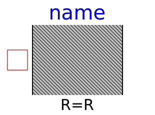

| Name | Description |
|---|---|
| Lumped thermal element storing heat | |
| Lumped thermal element transporting heat without storing it | |
|  ThermalResistor | Lumped thermal element transporting heat without storing it |
| Lumped thermal element for heat convection (Q_flow = Gc*dT) | |
| Lumped thermal element for heat convection (dT = Rc*Q_flow) | |
| Lumped thermal element for radiation heat transfer | |
| Collects m heat flows | |
| ThermalCollectorMatrix | Collects Ns x Np heat flows |
|
|
Signal adaptor for a HeatTransfer port with temperature and derivative of temperature as outputs and heat flow as input (especially useful for FMUs) |
|
|
Signal adaptor for a HeatTransfer port with heat flow as output and temperature and derivative of temperature as input (especially useful for FMUs) |